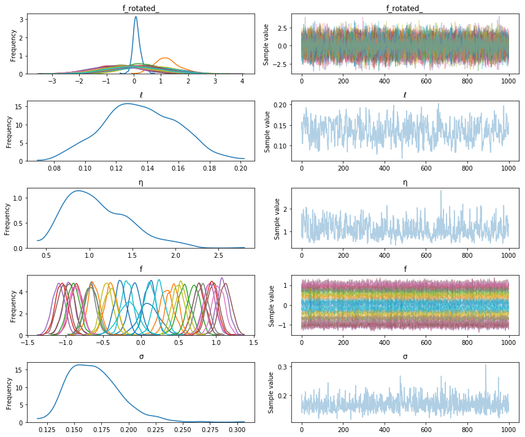
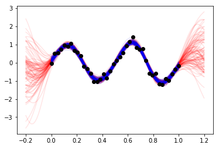

GP module refactor
An outline of my refactor of the GP module so far.
Sketch of the previous design
The previous design worked pretty well -- until it came time to think about adding in more advanced features and ways to speed up GPs. Things like:
- Sampling from components of additive GPs.
- GPs on a grid using Kronecker structure.
- Covariance functions that have compact support. Need sparse
SolveandCholeskyops. - GP approximations that can be trained with stochastic gradient descent.
- GP approximations which work with latent variable models.
- Stacking GPs on other GPs, or warping the inputs of a GP with a neural net.
Thinking about how to do each of these started becoming complicated. Any of these might take up the rest of the GSOC time, and I'm hoping to have some time after GP's to chip in on other parts of PyMC3.
I think support for additive GPs is the most important item on that list. Many introductions motivate GPs by describing how complex data can be broken down into components using using sums of GPs, each with specialized and thoughtfully designed covariance functions.
Problems (in particular, additive gps)
I wanted to make sure this was easy to do using PyMC3's GP library. I was working on reproducing the Keeling curve analysis from the Rasmussen+Williams book, and also the birthday analysis in BDA3. Doing so, I found that what I had so far was clumsy for modeling additive GPs. Adding covariance functions works great,
cov = cov1 + cov2 + cov3 + ...
But there is no reliable way to define
gp = gp1 + gp2 + gp3 + ...
Overriding __add__ wouldn't be so bad, but problems arise later it would be nice
to look at samples from gp1, gp2 or gp3. Doing this (cleanly!) was difficult. It would've required repeating many of the argument values when defining gp1, gp2:
gp1 = pm.gp.GP(name="gp1", X, cov1, mean1, sigma, "FITC", ...)
gp2 = pm.gp.GP(name="gp2", X, cov2, mean2, sigma, "FITC", ...)
...
But each of the three gp's don't have additive noise (parametrized by sigma) -- in this case the sum of them, after integrating out the latent gp function, is what does. So this syntax would be misleading. And what if a different X is given accidentally? What if one used the "FITC" approximation, and the other used "VFE", how could they add? This setup would be error prone for the user. It would also be error prone for me to raise exceptions in all these cases.
Below is an outline of the GP module before I reworked it.
Sketch of old design
def GP( ... ):
"""
This function is called by the user. It is responsible
for parsing the combination of argument values passed by
the user, and then for returning the correct GP implementation.
"""
# ...
# lots of parsing, checking, and setting things up here
# ...
return GPmodel
class _GP(object):
"""
Base class for GP classes. Only serves to provide a `random` method.
"""
def random(...):
""" Calls either `prior` or `conditional` of whatever GP object it
is attached to. Uses the mean and covariance returned to draw
samples from MvNormal.
"""
# ...
return samples
class GPFullNonConjugate(_GP):
"""
GP model where the latent GP itself (usually denoted "f") is
modeled explicitly. This model must be used whenever the likelihood
is non-Gaussian. The interesting part of this class it the `RV` method.
"""
def __init__(self, ...):
"""
Set the state of self given things like the inputs X, the
covariance function, and the mean function
"""
def prior(...):
# ...
return mean, covariance
def conditional(X_new):
# ...
return mean, covariance
@property
def RV(self):
"""
This gets called right after the GP class is first made. Since this
class doesn't inherit from a `Distribution`, it doesn't return a theano
symbolic variable. The reason I didn't have it inheret from `Distribution`
is so that reparametrize it as a vector of standard Normals that is rotated
by the Cholesky factor.
"""
v = Normal(name + "_rotated_", mu=0.0, sd=1.0)
f = Deterministic(name, tt.dot(chol, v))
return f
def logp(...):
In case this is called for some reason, it should return zero. The random
variable whose `logp` should be evaluated is `v`.
return 0.0
class GPFullConjugate(_GP, Continuous):
"""
This is the most straightforward implementation.
"""
def __init__(...):
basically the same __init__ as GPFullNonConjugate, except for a call to
super
def prior(...):
# ...
return mean, covariance
def conditional(...):
# ...
return mean, covariance
def logp(self, value):
# ...
return MvNormal.dist(mean, covariance).logp(value)
class GPSparseConjugate(_GP, Continuous):
""" Set up just like `GPFullConjugate`
"""
def sample_gp(trace, gp_object, ...):
"""
A specialized function for sampling from `gp_object`.
"""
File "<ipython-input-1-85ad58b5b1b3>", line 1
def GP( ... ):
^
SyntaxError: invalid syntax
Post refactor
I ended up changing the syntax a lot. In order to make the syntax more "math-like", I used __call__ in an unusual way. Hopefully there aren't issues with this that I haven't thought of.
The GP model or implementation used is determined by its class name. There is no factory function like def GP(...). When instantiated, the the gp is only assigned a covariance function. There are no arguments for the type of approximation used, the mean function, or anything else. The gp objects and how they add together is specified before complete information about the GP is specified. This guarantees that they will, evantually, get consistent arguments from the user. At this point, zero mean gps with the same implementation and a given covariance function are being added.
Here is how this looks (just for illustration, this code isn't runnable):
X = ... # input locations for the GP
y = ... # observed data with IID Gaussian noise
with pm.Model() as model:
# define priors for ℓ1 and ℓ2
...
# specify that y is the sum of two GP's with IID Gaussian noise
cov1 = pm.gp.ExpQuad(1, ℓ1)
gp1 = pm.GPMarginal(cov_func=cov1)
cov2 = pm.gp.Matern52(1, ℓ2)
gp2 = pm.GPMarginal(cov_func=cov2)
gp = gp1 + gp2
Parameters like the lengthscales \(\ell\) belong to the covariance functions, not the gp objects.
Notice that none of these objects have been given a name. All PyMC3 random variables, and Deterministics must be assigned a name. None of the objects that have been defined are a PyMC3 random variable yet. To construct the actual random variable, first for the marginal likelihood, __call__ and conditioned_on have to be called.
with model:
# define marginal likelihood
y_ = gp(name="y", size=len(y), mean_func=mean_func).conditioned_on(X, y=y)
What happened was:
-
The call method for
GPMarginalhas three non-parameter and non-random variable arguments describing theGPobject: -
name, the name to assign to the (in this case, observed) random variable. size, the number of points (input or output) of the GP. This is kind of a hack to get around some of PyMC3's issues with symbolic shapes. This argument should be removed if that gets addressed. I'd expect that most of the time the user will know the dimensions of the GP beforehand or will be able to access them from the data.mean_func. The mean function is provided here. Having themean_funcbe part of the state will make it easy to sample from thegpwith or without including effects from the mean function.
A reference to the object is returned, return self.
- Then
conditioned_on(...)is called. It's arguments are strictly either variables or data, such as the inputs, the observed data, inducing points, or the noise standard deviation. It returns a PyMC3 random variable that can be the GP's likelihood or its predictive distribution, depending on what thegpis conditioned on.
The main reason for the separation between state being set in __call__ and random variables being set in conditioned_on is to have a nice syntax. Another reason is so new distributions with different random variables can be remade, without necessarily messing with the object's state. For instance, one may wish to remove the noise variance parameter, or to use different Xs input locations to predict at.
The same gp object is used to construct the predictive distribution, which is used to draw samples from both gp, and gp1 or gp2. conditioned_on is called again to construct a new PyMC3 random variable for the GP's predictive distribution.
The observed data \(y\) at locations \(X\) and the new inputs \(X_*\) are all given.
# inference
with model:
trace = pm.sample(1234)
# define predictive distributions
Xs = np.linspace(0,1,200)[:,None]
with model:
# Recover the latent function values from gp1. Notice that Xs=X.
# It's not required to do this, just possible.
f1 = gp1("f1", size=200, mean_func=pm.Zero()).conditioned_on(X, y=y, Xs=X)
# The predictive distribution of gp
f_pred = gp1("f_pred", size=200, mean=mean_func).conditioned_on(X, y=y, Xs=Xs)
Since conditioned_on returns PyMC3 random variables, sample_ppc can be used! There is no longer a need to define a specialized interface to sample from a gp object.
# draw samples
with model:
samples = pm.sample_ppc(trace, vars=[f1, f_pred], samples=100)
For nearly all the current GP implementations, f or f_pred are plain instances of MvNormal with particular mean and covariance matrices.
Sketch of new design
I think the new design might even be simpler than the old. Here is a sketch of how things are now
class GPBase(object):
"""
All subclasses of GPBase must implement `_prior_rv`, and `_predictive_rv`.
These two methods must return a PyMC3 random variable. Subclasses of
GPBase should not overwrite `conditioned_on`.
"""
def __init__(self, cov_func):
self.cov_func = cov_func
def __add__(self, other):
# error if they are not the same type
return type(self)(self.cov_func + other.cov_func)
def __call__(self, name, size, mean_func):
# set state
self.name = name
#...
return self
def conditioned_on(self, X, Xs=None, **kwargs):
if Xs is None:
return self._prior_rv(X, **kwargs)
else:
return self._predictive_rv(X, **kwargs)
def _prior_rv(self, X, **kwargs):
raise NotImplementedError
def _predictive_rv(self, X, **kwargs):
raise NotImplementedError
class GPMarginal(GPBase):
"""
This is an example of a GP subclass a user would actually use.
As required, _prior_rv and _predictive_rv return random variables.
"""
def _build_prior(self, X, sigma):
# math goes here
mu = self.mean_func(X)
K = self.cov_func(X)
# ...
# returns the mean and the cholesky factor of covariance matrix \
# of the gp likelihood
return mu, chol
def _build_predictive(self, X, y, Xs, sigma):
# math goes here
return mu, chol
def _prior_rv(self, X, y, sigma):
mu, chol = self._build_prior(X, sigma)
# note that `observed` is set here using y, that we conditioned on
return MvNormal(self.name, mu=mu, chol=chol, shape=self.size, observed=y)
def _predictive_rv(self, X, y, Xs, sigma):
mu, chol = self._build_predictive(X, y, Xs, sigma)
return MvNormal(self.name, mu=mu, chol=chol, shape=self.size)
The Theano code for constructing the mean and covariance of these random variables is confined to _build_prior, and _build_predictive. This keeps the implementation readable and cleanly separated from both the required random variable constructors, _prior_rv and _predictive_rv, or the programming logic, which can just be placed into other methods specific to the particular GP implementation.
I think this setup should make for a pretty efficient pattern to help implement other GP models or approximations. While I was at it, I implemented a class for a Student's T process in about 20 lines of code!
Example
Here is an actual runnable example. This implementation is of a full GP where the latent f hasn't been integrated out. This code isn't part of master yet, so to run you would need to check out the branch "gp-module".
import pymc3 as pm
import theano.tensor as tt
%matplotlib inline
# data
X = np.linspace(0,1,40)[:, None]
y = np.sin(2*np.pi*X.flatten()*2) + 0.2*np.random.randn(40)
with pm.Model() as model:
ℓ = pm.Gamma("ℓ", alpha=1, beta=1)
η = pm.HalfCauchy("η", beta=3)
cov = tt.square(η) * pm.gp.cov.ExpQuad(1, ℓ)
mean = pm.gp.mean.Zero()
# GPLatent samples the latent function values of the GP directly
gp = pm.gp.GPLatent(cov_func=cov)
f = gp("f", 40, mean).conditioned_on(X)
σ = pm.HalfCauchy("σ", beta=3)
y_ = pm.Normal("y_", mu=f, sd=σ, observed=y)
tr = pm.sample(1000)
Auto-assigning NUTS sampler...
Initializing NUTS using advi+adapt_diag...
Average Loss = 53.373: 7%|▋ | 13484/200000 [00:24<06:24, 485.59it/s]
Convergence archived at 13500
Interrupted at 13,500 [6%]: Average Loss = 74.843
100%|██████████| 1500/1500 [04:57<00:00, 6.72it/s]/home/bill/pymc3/pymc3/step_methods/hmc/nuts.py:463: UserWarning: Chain 0 contains 25 diverging samples after tuning. If increasing `target_accept` does not help try to reparameterize.
% (self._chain_id, n_diverging))
pm.traceplot(tr);

# points to predict at
Xs = np.linspace(-0.2, 1.2, 100)[:,None]
# make predictive distribution
with model:
f_pred = gp("f_pred", 100, mean).conditioned_on(X, Xs=Xs, f=f)
# sample from f_pred with sample_ppc
with model:
samples = pm.sample_ppc(tr, vars=[f_pred], samples=100)
plt.plot(Xs.flatten(), samples[f_pred.name].T, "r", alpha=0.1);
plt.plot(X.flatten(), (tr["f"][-100:]).T, "b", alpha=0.1);
plt.plot(X.flatten(), y, 'ko');
100%|██████████| 100/100 [00:00<00:00, 113.06it/s]
